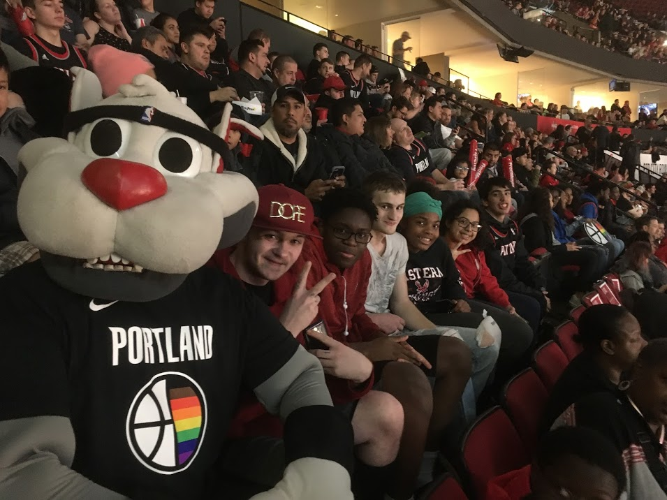
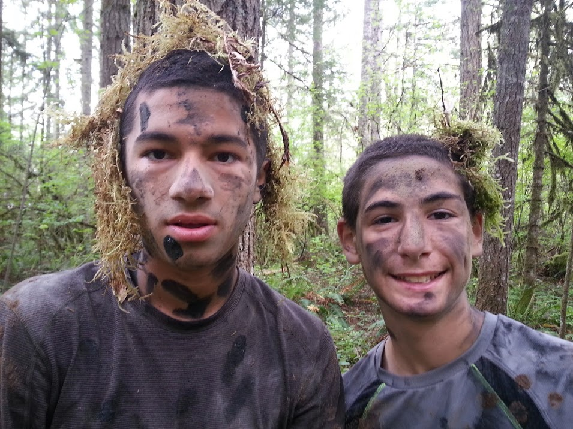
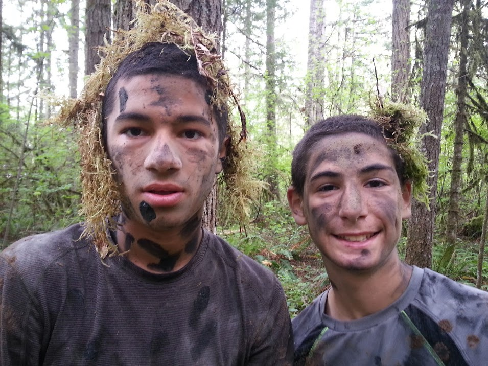
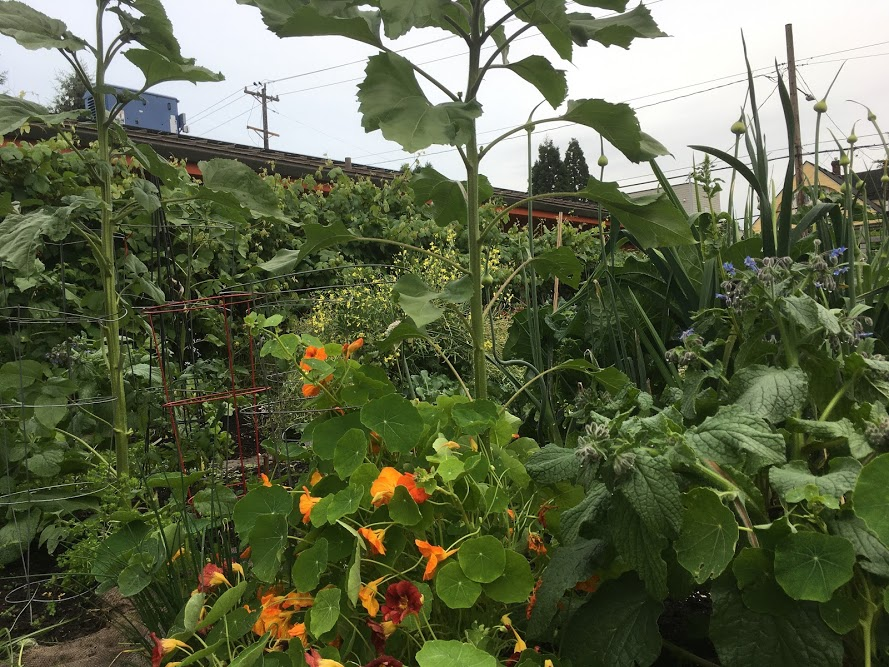
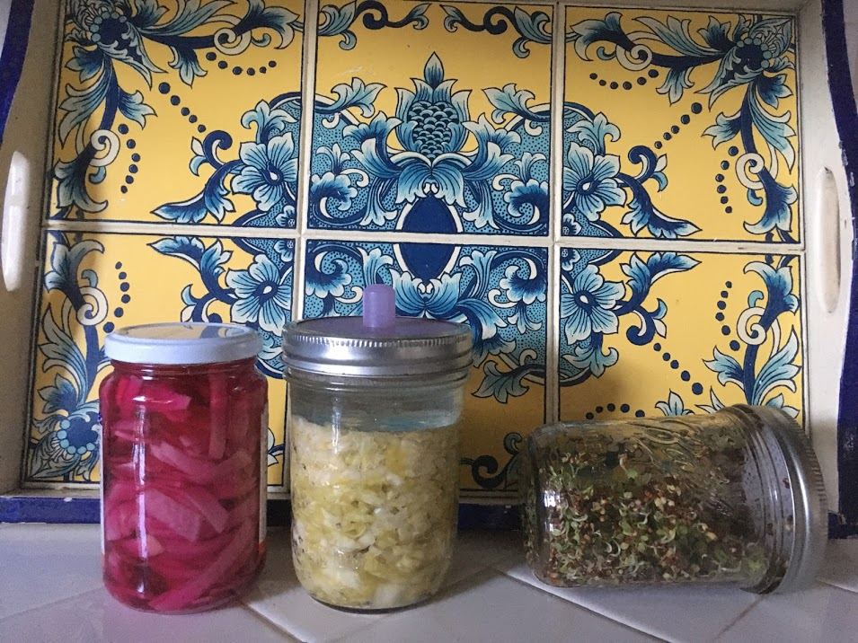
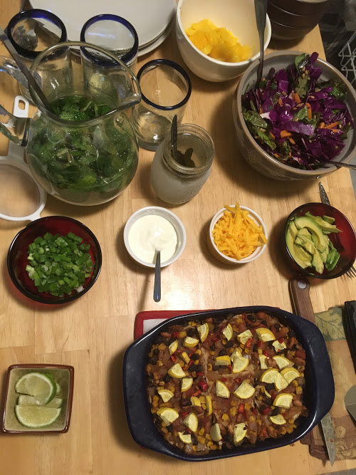

About Me
-
Work experience and education
Prior work experience has primarily focused on program management of youth development and educational programs, community-partnership development, and social and environmental justice.
Friends of the Children. In my most recent position, I served as Group Programming Manager at Friends of the Children, an award-winning non-profit focused on providing mentorship and support for Portland's most vulnerable youth. Where There Be Dragons. I spent over a decade designing, directing, and leading radical, experiential education programs for high school and college students from the US throughout Latin America which focused on community partnerships, social justice, and sustainability.Sequoyah School. For four years I served as the Director of Field Studies at a progressive k-12 school in Southern California.
Where There Be Dragons. I spent over a decade designing, directing, and leading radical, experiential education programs for high school and college students from the US throughout Latin America which focused on community partnerships, social justice, and sustainability.Sequoyah School. For four years I served as the Director of Field Studies at a progressive k-12 school in Southern California. -
Hobbies
During the days of Corona, much of my free time is spent growing food in the garden, then either pickling the bounty or cooking it up with friends!
Gardening. After two years on the waitlist, I was got a spot in our local community garden. Yay!Pickling. I love pickling and can get pretty creative. The most ridiculous thing I have ever made is garlic, rosemary pickled strawberries.Dinner Parties. Though its more difficult these days to have dinner parties with all of the people that I used to, its still something that I am able to do frequently with my roommates. Each week we rotate chefs and take a turn a cooking a meal for the rest of the roomies. Its a great chance to explore new recipes as well as catch up with one another.